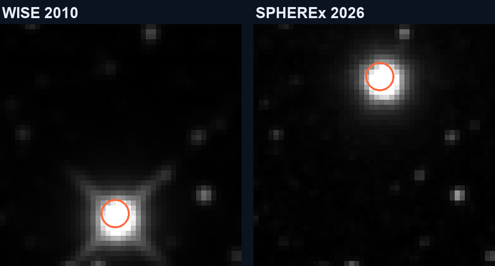
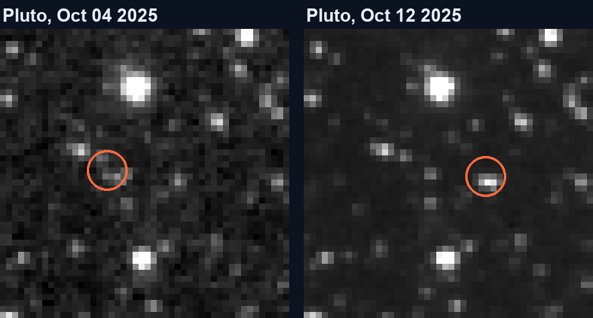
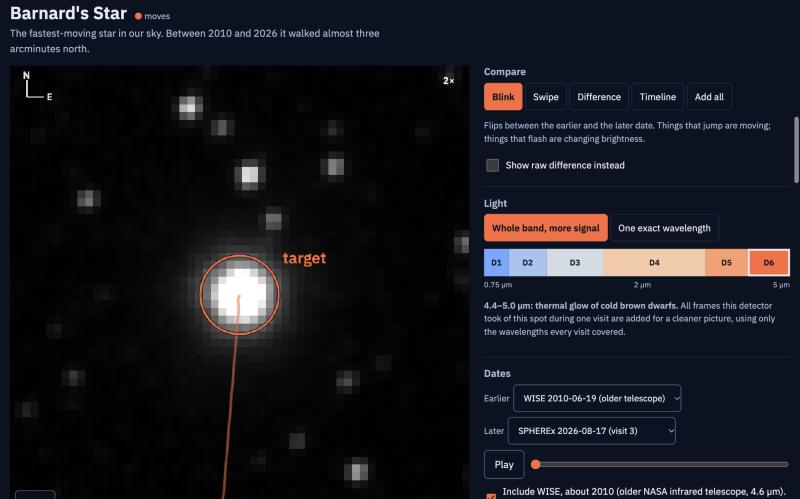
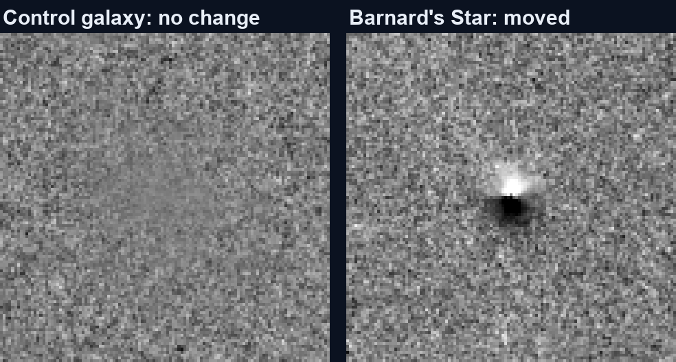
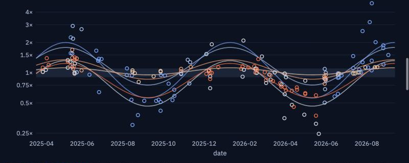
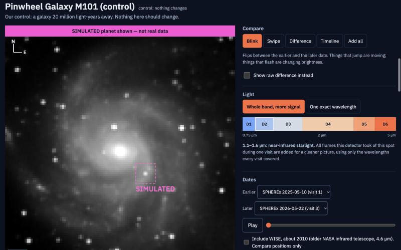

The sky looks still. It isn't.
Blink real NASA SPHEREx images of any patch of sky.
https://therealbatats.github.io/spot/
Team AITHMAC · Ali · Baghdad · NASA Space Apps 2026 · Planet X and SPHEREx

SPHEREx maps the whole sky every six months in 102 infrared colours.
Things that move or change between images are the interesting ones. That is how Pluto was found in 1930.

Type coordinates. Your browser builds the field live from NASA's public archive copy. No server.
Blink, swipe, subtract, add, play. Zoom, readout, provenance.

Compares only matching wavelengths. Differences show significance, so steady stars stay grey.
Control galaxy: 2 spots in 18 comparisons.

27.1 px: Barnard's Star 2010→2026 (predicted 27.3)
0.5 px: Pluto vs NASA JPL Horizons, median
15/15 frames traced to the original files

Draws a pretend planet, moving as parallax and orbit would, into real images.
A real Planet Nine is probably too faint for SPHEREx. We say so.

https://therealbatats.github.io/spot/
Code (MIT): https://github.com/therealbatats/spot
Next: asteroid tracking, Arabic and English classroom mode.
Data: SPHEREx DR1 and QR3 (NASA/IPAC IRSA, DOI 10.26131/IRSA678, 10.26131/IRSA662); AllWISE (NASA/IRSA); Gaia DR3 (ESA, via MAST); JPL Horizons. All images are real telescope data except the labelled simulation.
Prepared with AI assistance.